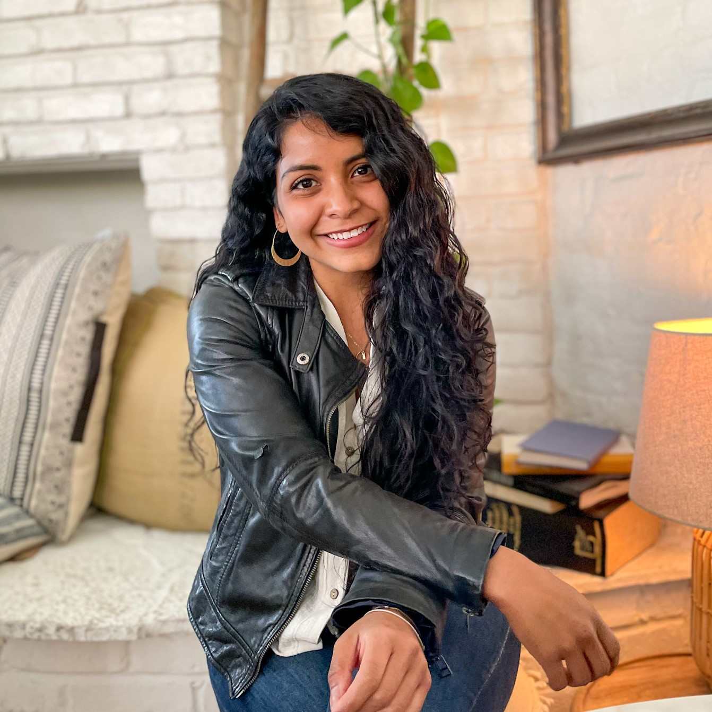

Reconnect Program

My Reconnect program is a one-on-one coaching program consisting of four phases to help you achieve food freedom and regain your self-confidence.
-
This program is for you if you’re:
- Constantly fighting against your hunger, your body, and food and you want to heal it from the root cause
- Experiencing a sense of loss of control with food and want to find your balance
- Feeling trapped in the diet cycle and you want to live free of shame
- Spending your days thinking about food and want to find calm
- Living uncomfortable in your body and want to make it your home
- Wanting to learn to manage your emotions without having to resort to food
- Wanting to let go of guilt and fear to start accepting yourself as you are
- Want to build a more free, flexible and harmonious relationship with your body and food
- Want to trust yourself and your intuitive wisdom
-
Lo que puedes esperar:
- 26 semanas de apoyo 1:1
- Un programa de coaching adaptado a tus necesidades
- 13 sesiones 1:1 vía zoom de 60 minutos
- Prácticas de conexión y embodiment, worksheets, meditaciones PDF’s y recursos para ayudarte a comer de forma consciente e intuitiva
- Acceso a mi entre sesiones vía Whatsapp para apoyarte a lo largo de todo tu proceso
-
Funciona porque:
- Es un programa estructurado para guiarte a recuperar tu conexión contigo. Lo creé integrando todas las prácticas y técnicas que me ayudaron a mi a lo largo de mi proceso y hubiese deseado tener dentro de un solo contenedor.
- Te facilitaré recursos y herramientas para sanar desde el origen que se quedarán contigo por el resto de tu vida
- No es un quick fix, es un proceso que te permitirá comprenderte y recuperar tu poder para así lograr un cambio definitivo
- Gira alrededor de ti; te guiaré y te proporcionaré apoyo para que transformes tus creencias, eleves tu conciencia y tomes acción inspirada. Recuerda que cuando cambias tu, cambia tu realidad.
-
What you can expect:
- 26 weeks of 1: 1 support
- A coaching program adapted to your needs
- 13 1: 1 sessions via 60 minute zoom
- Connection and embodiment practices, worksheets, meditations, PDF’s and resources to help you eat in a conscious and intuitive way
- Access to me between sessions via WhatsApp to support you throughout your entire process
-
It works because:
- The program is customized to your needs. It’s designed to guide you to regain your connection with your body, your intuition, and yourself. I created it by integrating all the practices and techniques that helped me throughout my process and I would have liked to have it in a single container.
- I will provide you with resources and tools to heal from the root cause that will stay with you for the rest of your life
- It is not a quick fix, it is a process that will allow you to understand yourself and regain your power in order to achieve a definitive change
- It revolves around you and I will guide and support you to transform your beliefs, raise your consciousness, and take inspired action. Reminding you that when you change, your reality changes.
Think how much better your life would be if you didn’t have to fight against yourself anymore. If you’re ready to feel liberated from food guilt and negative body image, I’d love to support you on your journey towards learning how to listen and trust your body again.
I'M READY